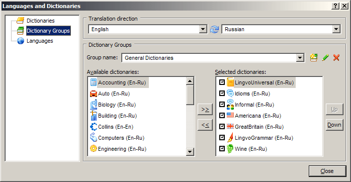
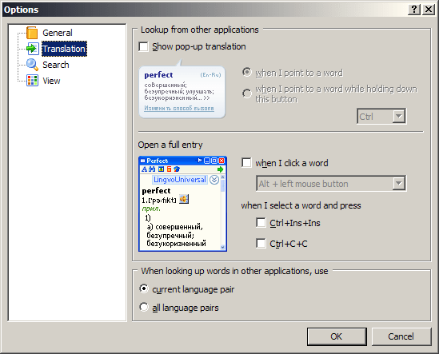
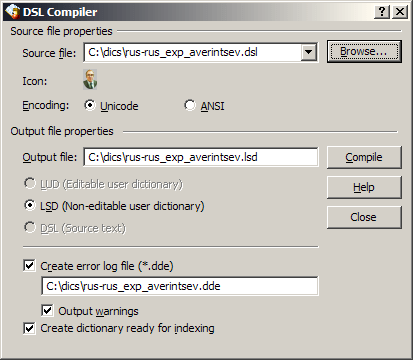
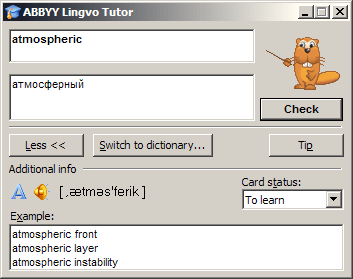

Lingvo 12.0
Хроника
Год выпуска: 2006.
Настройка серого по умолчанию цвета в диалоге настроек программы переименовывается в Examples, полагая тем самым начало недоумению в определении её назначения (подробнее см. в описании тэга [*]).
Интерфейс доступен на 3 языках: английском, русском и украинском.
Внешний вид
Основное окно программы, список заголовков:

Словарная карточка:

Окошко аннотации словаря:

Вкладки окна управления словарями:



Вкладки окна настроек программы:




Окошко «О программе»:

Окно компилятора пользовательских словарей:

Окно приложения Tutor:

Состав словарей
| Наименование | Автор, издание | Объём |
|---|---|---|
| ... в разработке ... | ... в разработке ... | ... в разработке ... |